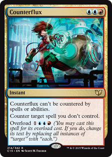

brewing with surrak - targeted removal
published - 08/04/2019
Every EDH deck needs a way to deal with threats. You're tyically up against 3 other players, and they're doing the same thing you are - trying to win, so you need to be able to stop them from advancing their gameplan ahead of yours, while still protecting your own gameplan. We do this by removing their threats and protecting our own.
Let's talk removal - it's an important aspect of the game, you need to be able to deal with your opponents threats; they play a Blightsteel Colossus, you need to get rid of it. Someone plays the last piece of their combo and is threatening to go off, get rid of it. You get the idea, you've heard it and read it before, you need interaction.
In our colours, we have plenty of answers for getting rid of basically anything, and two of the most obvious are Beast Within, and Chaos Warp;
Gotta' catch 'em all
Beast Within is a 3 mana instant that destroys any permanent and leaves it's controller with a 3/3 beast token. That's pretty damn good since we don't really care about the token they're getting, it's a mild blocker but our creatures will be bigger so it's not a threat to us, and it's usually going to deal with an important piece of their plan.
Chaos Warp is another 3 mana instant, but this time you don't destroy the permanent, it shuffles it into their library, then they reveal the top card and get it if it's a permanent. It's great for getting around permanents we can't destroy, but it can backfire on us pretty hard, we could warp away something that's a decent threat, and end up staring down the barrel of something much more dangerous. Still, hitting any permanent is an invaluable piece of tech.
This guy just drools Gruul - Smash your opponents and smash their stuff!
Other effects like these that deal with anything on the board are Desert Twister, a slower, more expensive Beast Within that doesn't leave behind a 3/3 token, and Scour from Existence, a 7 mana deal-with-anything-forever-right-now instant that CAN go everywhere, thanks to being colourless.
These cards are great for dealing with permanents that have already hit the board, and could easily be included in any deck that can house them, but we also have access to blue - the colour for dealing with things we don't want to happen; be it a creature with a powerful ETB effect, or something like a boardwipe that's really going to ruin our day. Like Beast Within and Chaos Warp, we want to first look at our catch-all options.
How 'bout - "no!"
Counterspell is quite literally the OC (Orginal Counterspell), it deals with any spell for the lovely cost of UU. That's it, end of story, no bells or whistles, no conditions to meet, nothing. It's a fantastic card, it's been printed enough to be cheap, so if you're running blue, you should probably be running Counterspell.
Nothing quite says Simic like a Lizard Wizard that's also an Elf.
Pact of Negation, Force of Will, Thwart, Foil and Rewind are all 'free' counterspells that should be considered, while Mana Drain, Counterlash, Spell Swindle, Plasm Capture all act like 'free' counterspells. Counterlash is the most expensive at 6 mana, but letting you cast something that potentially costs far more, like an Eldrazi Titan, can be extremely valuable. Whichever option you look at they all do the same thing - they let you stop someone from doing something you don't want them to do.
Scatter to the Winds, Cryptic Command and Insidious Will are where we start to get some bells and whistles. Command and Will are modal spells that have a Counterspell option, while Scatter is a Cancel that has an alternate cost that lets you animate a land too. Draining Whelk, Frilled Mystic and Mystic Snake are the creature based options. They flash in, counter a spell and leave a body behind. Brilliantly, with Surrak in play they also read 'This spell can't be countered', meaning no counter wars, you just say "No" and get a creature out of the deal. A 'close enough' mention here is Mystic Genesis, which counters the spell and leaves behind an X/X Ooze, though it doesn't get the 'can't be countered' benefit from Surrak.
Probably the best catch-all spells we can include are Disallow and Voidslime, as they not only counter spells, but also counter activated and triggered abilities, making them the most versatile counterspells available and therefore well worth a slot in any deck that can run them. I'm also going to add Counterflux as an honourable 'catch-all' as a silly play on words. It's a solid counterspell that can't be countered and nicely can counter everything that we don't control should we decide to overload it.
Of these options I quite like Beast Within and Chaos Warp to deal with permanents, alongsde the creature based counters (Whelk, Mystic and Snake) for added value, Rewind as our 'free' counterspell, Insidious Will as a multi-purpose spell, with Disallow and Counterflux as our catch all counters.
rid this world of your unnatural toys
Having access to the catch-all options is a must, no arguments - but as you can see, it's easier to deal with spells on the stack than on the board - still though, I'd rather stop something before it happens than not having a way to deal with it at all. That's why conditional removal is just as vital. Sure infinte flexibility is amazing, and always preferred, but as we can see with Scour from Existence and Desert Twister, it can be far from ideal.
Green can pretty reliably hit noncreature permanents, one of my favourite examples of this is Terastodon - a 9/9 elephant for 8 that straight up wrecks 3 things and replaces them with more elephants. We also get great options like Destructor Dragon, which destroys something when it dies and has a decent 4/4 flying body attached to it; And Primal Command, a great modal spell that works similarly to Chaos Warp by putting something back on the top of it's owners' library, as well as having 3 other options to choose from.
Diving deeper into hitting specific things, namely artifacts and enchantments, we can narrow down the cascade of different options while we try to find the ones that best fit the gameplan of our deck. Looking first at our creature options we have two greats in my opinion;
Trygon Predator, and the new Sunder Shaman. Each of them will destory an artifact or enchantment when they deal combat damage to a player - our decks primary goal and win condition, getting into the 'red zone' and dealing with our opponents the old fashioned way. Both have evasion in one way or another, Predator has flying, while the Shaman can only be blocked by one thing at a time - meaning when we give it trample, it needs to be blocked by an X/5 or bigger.
Caustic Caterpillar, Viridian Zealot, Sylvok Replica and Thrashing Brontodon all have activated abilities tied to sacrificing them in order to destroy an artifact or enchantment, with Caterpillar being the cheapest and smallest, and Brontodon being the most expensive and largest. These effects are quite useful as they can be used at instant speed (providing we have the creature on the board), and could possibly deter our opponents' from playing out their most dangerous cards for fear of losing them. Conversely, we have Reclamation Sage, Indrik Stomphowler and Conclave Naturalists that destroy artifacts or enchantments when the hit the battlefield, leaving behind the body to block with or pump later on. Mockery of Nature sits in a weird place here, its destroy ability is on cast, not on entering or leaving the battlefield. It's useful, but at 9 mana its rather expensive.
When we move to noncreature removal spells we really have to focus on the fast and cheap - We want to spend our mana on our own big, powerful plays, not on a decent play and a removal creature; and we also want to spend our mana effiecntly, if we've got an untapped forest open and it's about to move to our turn, we really want to be using that mana - it's mana effiecncy.
Natural State, Nature's Claim, Deglamer, Unravel the AEther, Naturalize, Tribute to the Wild and Fade into Antiquity are all instant speed removal that gets rid of an artifact or enchantment; Natural State is limited to anything CMC 3 or less, Nature's Claim gives the controller 4 life. Deglamer and Unravel shuffle the targets into their owners libraries, Naturalize is the default, no bells or whistles, no hoop-jumping goto option for destroying something, with Fade into Antiquity costing 1 more to upgrade to an exile effect. Tribute to the Wild each opponent to sacrifice an artifact or enchantment which is a great upside, its downside is that we can't choose what goes.
One that I don't see very often, which I quite enjoy is Consign to Dust - it cost 1 more than Naturalize, over and over again - so you can dump 6 mana in and hit 2 artifacts and/or enchantments, pump 9 mana in and hit 3, 12 mana and... You get the idea, it's a super flexible spell that can go in most decks that have green in them. If you're lookning to just hit artifacts, then Release the Gremlins and By Force are both great options in an artifact heavy meta - Gremlins even gives you a 2/2 token for each artifact destroyed too!
this abomination never belonged
So far we've got a good selection of ways to deal with noncreature permanents and with spells on the stack, but we've only really got Beast Within and Chaos Warp for creatures, so what other options do we get?
Pongify, Rapid Hybridization and Polymorph each destroy a creature and then replace it with something else, the two former being a 3/3 of some form, similar to Beast Within, while the latter gets the controller another creature from their deck, which, like Chaos Warp, could be quite detrimental for us. Reality Shift is nice in that it exiles the creature instead, then replaces it with a Manifest creature, which could be a creature that they can flip, but if its a noncreature card, its basically useless to most strategies. Curse of the Swine (or Hamnation as I've seen it called) can hit any number of creatures, exiling them and replacing them with some delicious baco-BOARS... It replaces them with Boars...
That's basically what we get for targeted removal - dealing with stuff on the stack and most noncreature threats is something we can do quite well, but our creature removal package is lacking when compared to white or black, both of those colours have much better ways to deal with creatures.
so, what do we get out of this
We've gone through quite a lot of options available to us here, there's a lot to consider for the deck, we need to make sure we fill the spots with cards that are going to work in our favour, and help us deal with our opponents' threats most efficently.
- Beast Within - We need this piece of catch-all removal in our deck, it's perfect for us
- Chaos Warp - Same situation with this, we've gotta have this in the deck, it's too good not to include
- Rewind - I adore rewind, it's simple, effective, and I like it
- Insidious Will - The felxibility of this spell just feels right. We can steal or redirect a spell to someone else, or we can just stop it
- Disallow - Sometimes we need to be able to stop someone from doing something that nobody else can, this is good
- Rapid Hybridization - Getting to remove any creature for just one mana is insanely good, and a great inclusion
- Pongify - Same as Hybridization, one mana for removal is completely fantastic.
- Consign to Dust - I really do enjoy this spell, sure it can be a worse Naturalize, but its ability to be so much more makes it invaluable to me
- Frilled Mystic - Counterspell plus a creature, with the flexibility to have "can't be countered" - works for me
- Mystic Snake - Once again, this is an effect I want, it's simply great
- Draining Whelk - This one is much better than the previous two simply because it can get so, so much better
- Conclave Naturalists - Having a decent sized body, as well as destroying an artifact or enchantment upon entry is fantastic - getting trample from Surrak makes the 4/4 body quite acceptable as well
- Indrik Stomphowler - Same as the Naturalists, having a decent body, hitting something upon entry and getting trample makes this a worthy inclusion
- Terastodon - A HUGE body that also hits 3 things AND gets trample makes this far and away the best creature based removal we have
- Trygon Predator - We want to hit people, lots, that's our whole shtick - getting to blow things up as an upside it just gravy
- Sunder Shaman - Doing what Predator does while on a much, much bigger body is probaby one of the perfect combinations
- Curse of the Swine - Hamnation. Like Consign to Dust, I love the flexibility of this spell, plus getting to turn your opponents stuff into delicious tasty bacon seeds is always hilarious!!
That about does us for targeted removal, we do have quite a few options for boardwipe effects, but we'll go through them in the next article, so until then dear readers - may your pulls be sweet and your topdecks true.